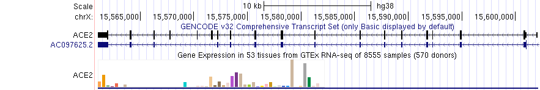

The barChart (and bigBarChart) track format displays a graph of category-specific values over genomic regions, similar to the GTEx Gene track. This format is useful for displaying gene expression and other datasets where it is desirable to compare a set of variables over genomic regions.
While a barChart track can effectively show datasets with single values for each variable (e.g. comparing individual samples), the format provides specific features to display studies comprised of a large set of samples for each variable (e.g. comparing tissues with multiple samples for each tissue). In this usage, the main genome browser display presents a graph of summary values (e.g. medians) for each variable, and the distribution of sample values across variables is shown via a boxplot graph shown on the details page for each region.
The barChart format is available as a standalone plain text bed6+ format
for use with smaller datasets as a custom track, and as a binary indexed format (bigBarChart)
suitable for track hubs and custom tracks.
The bigBarChart format provides more track customization
features (i.e. schema customization, and label configuration support), and
is recommended for users who can use command-line tools and have web-accessible data storage. If
you do not have web-accessible data storage, please see the
Hosting section of the Track Hub Help documentation.
barChart format files are converted to bigBarChart files using the program
bedToBigBed, run with the -as option to pull in a special
autoSql (.as)
schema file defining the fields of the bigBarChart.
Below is an example of the barChart format in 'full' visibility mode

The 'squish' display mode draws one colored rectangle indicating the category (e.g. tissue) with highest value of the measured metric (e.g. gene expression) if it contributes more than 10% to the total expression, otherwise the chart is colored black. The following image shows the GTEx Genes track in 'squish' mode; the beige colored item (tissue) has the highest expression in the ACE2 gene and represents more than 10% of total expression. Click into the colored rectange for more information.
The following autoSql definition illustrates the basic schema supporting barChart (and bigBarChart) tracks.
table bigBarChart
"bigBarChart bar graph display"
(
string chrom; "Reference sequence chromosome or scaffold"
uint chromStart; "Start position in chromosome"
uint chromEnd; "End position in chromosome"
string name; "Name or ID of item"
uint score; "Score (0-1000)"
char[1] strand; "'+','-' or '.'. Indicates whether the query aligns to the + or - strand on the reference"
string name2; "Alternate name of item"
uint expCount; "Number of bar graphs in display, must be <= 100"
float[expCount] expScores; "Comma separated list of category values."
bigint _dataOffset; "Offset of sample data in data matrix file, for boxplot on details page, optional only for barChart format"
int _dataLen; "Length of sample data row in data matrix file, optional only for barChart format"
)
The first 6 fields of the barChart format are the same as the first 6 fields of the standard BED format. The name2 field provides an alternate item name, useful if you would like to associate multiple transcripts to a single gene locus, different variables to the same experiment type, etc. The expCount and expScores fields are used as in the Microarray format; they define the number of categories and a value for each category (see example #1 below).
The _dataOffset and _dataLen fields are used internally by the track to locate sample values for a region in an optional matrix file containing all sample values. These values are used to draw a boxplot of all sample data on the details page for the bar chart. When a matrix file is not supplied, these fields should be set to 0. (As a convenience, these fields are optional for barChart custom tracks).
When creating bigBarChart files, we encourage you to customize the title and field descriptions of the prototype autoSql schema to better describe your data. In the example below, the name field of the track refers to a transcript, while the name2 field represents a gene:
table xyzGeneExpression
"XYZ gene expression barChart"
(
string chrom; "Reference sequence chromosome or scaffold"
uint chromStart; "Start position in chromosome"
uint chromEnd; "End position in chromosome"
string name; "Transcript name"
uint score; "Score (0-1000), derived from total expScores (below)"
char[1] strand; "+, -, or ., indicating orientation of the item"
string name2; "Gene name"
uint expCount; "Number of tissues"
float[expCount] expScores; "Comma separated list of median expression in RPKM for each tissue."
bigint _dataOffset; "Offset of sample data in data matrix file"
int _dataLen; "Length of sample data row in data matrix file"
)
The steps for creating barChart tracks differ from the process for creating bigBarChart tracks. The steps also differ based on whether you have an input matrix file (generated perhaps from an RNA-Seq differential expression analysis pipeline) or not. If you have an expression matrix-like file, skip to Example #3, otherwise follow example 1 below.
In this example, you will create a barChart custom track using example bed6+3 data.
track type=barChart name="barChart Example One" description="A barChart file" barChartBars="adiposeSubcut breastMamTissue colonTransverse muscleSkeletal wholeBlood" visibility=pack
browser position chr14:95,081,796-95,436,280
# chrom chromStart chromEnd string name score strand name2 expCount expScores _dataOffset _dataLen
chr14 95086227 95158010 DICER1 999 - ENSG00000100697.10 5 2.94,11.60,38.00,6.69,4.89
chr14 95181939 95319906 CLMN 999 - ENSG00000165959.7 5 7.08,69.53,9.32,1.38,1.68
chr14 95417493 95475836 SYNE3 999 - ENSG00000176438.8 5 7.29,3.73,0.74,20.35,1.39
After the file loads in the Genome Browser, you should see an automatically colored bar graph with 5 bars. Hovering the mouse over any of the individual bars will display the name of the particular bar ("wholeBlood", "adiposeSubcut", ...) as well as the value associated with that bar (10.94, 0.74, ...). The order of bar names in the barChartBars field of track line should exactly match the order of the values in the expScores field.
In this example, you will create a bigBarChart track out of an existing bigBarChart format file, located on the UCSC Genome Browser http server. This file contains data for the hg38 assembly.
To create a custom track using this file:
track type=bigBarChart name="bigBarChart Example One" description="A bigBarChart file" barChartBars="adiposeSubcut breastMamTissue colonTransverse muscleSkeletal wholeBlood" visibility=pack bigDataUrl=http://genome.ucsc.edu/goldenPath/help/examples/barChart/hg38.gtexTranscripts.bb
browser position chr14:95,081,796-95,436,280
After the file loads in the Genome Browser, you should see an automatically colored bar graph with 5 bars. The same rules apply to bigBarChart custom tracks as barChart custom tracks in that the order of names in the barChartBars field should exactly match the order of values from the expScores field in the bigBarChart file.
In this example, you will use the helper scripts expMatrixToBarchartBed and bedJoinTabOffset on example matrix and category files in order to generate a bed6+5 barChart format file, which can be loaded as a custom track into the Genome Browser.
The matrix file is a tab-separated (must be tabs, not spaces) file of the following form, perhaps resulting from an RNA-Seq analysis pipeline. Please note that the first line must describe each column as in the example snippet below.
transcript sample1 sample2 sample3 sample4 sample5 ... transcriptName value1 value2 value3 value4 value5 ...
The categories file then provides more meta information about this matrix file. It is a two column, tab-separated file that maps the samples in the matrix file to a specific category:
sample1 category1 sample2 category1 ... ... sampleA category2 sampleB category2 ... ... sampleX category3 sampleY category3 ... ...
Each column in the first line of the matrix file must be found in the categories file.
We have provided an example category file and matrix file to follow along with the rest of this example.
To create a custom track in this form, follow the below steps:
chr14 95086227 95158010 ENSG00000100697.10 999 - DICER1
export PATH=$PATH:$HOME/Downloads
expMatrixToBarchartBed categoriesFile matrixFile bedInputFile outputBed
chr14 95086227 95158010 ENSG00000100697.10 999 - DICER1 5 10.94,11.60,8.00,6.69,4.89 93153 26789
The columns and order of the groups are: #chr start end name score strand name2 expCount expScores;adiposeSubcut breastMamTissue colonTransverse muscleSkeletal wholeBlood _offset _lineLengthIf you have already pre-computed expCount and expScores, and just need offsets into your matrix file for a more descriptive details page, run only bedJoinTabOffset like so:
bedJoinTabOffset matrixFile exampleBed6+3 outBed
track type=barChart name="barChart Example" description="A barChart file" barChartBars="adiposeSubcut breastMamTissue colonTransverse muscleSkeletal wholeBlood" barChartMetric=median" visibility=pack
expMatrixToBarchartBed automatically computes the median values for all the samples in the matrix file, which is useful when your experiment contains data from 8000 samples (such as the GTEx data). Furthermore, expMatrixToBarchartBed can compute the mean value of all samples in a category of the matrix file (instead of the default median), in addition to allowing for a specific ordering of the expScores field. NOTE: Set the barChartMetric setting to 'mean' if you use this option of expMatrixToBarchartBed. For more information about expMatrixToBarchartBed or bedJoinTabOffset, run the program with no arguments to get a usage message.
In this example, you will use the bed6+5 file created in Example 3 to create a bigBarChart file, allowing the data to be remotely accessed and exist within a track hub. The track settings for bigBarChart on a hub can be viewed here.
bedToBigBed -as=barChartBed.as -type=bed6+5 inputBed hg38.chrom.sizes output.bigBed
track type=bigBarChart name="bigBarChart Example One" description="A bigBarChart file"
barChartBars="adiposeSubcut breastMamTissue colonTransverse muscleSkeletal wholeBlood"
barChartMetric=median barChartUnit=RPKM
bigDataUrl=http://genome.ucsc.edu/goldenPath/help/examples/barChart/hg38.gtexTranscripts.bb
barChartMatrixUrl=http://genome.ucsc.edu/goldenPath/help/examples/barChart/exampleMatrix.txt
barChartSampleUrl=http://genome.ucsc.edu/goldenPath/help/examples/barChart/exampleSampleData.txt
visibility=pack
track exampleBarChartTrack
type bigBarChart
visibility full
shortLabel exBarChart
longLabel Simple example bar chart track
barChartBars adiposeSubcut breastMamTissue colonTransverse muscleSkeletal wholeBlood
barChartColors #FF6600 #33CCCC #CC9955 #AAAAFF #FF00BB
barChartLabel Tissues
barChartMetric median
barChartUnit RPKM
bigDataUrl http://genome.ucsc.edu/goldenPath/help/examples/barChart/hg38.gtexTranscripts.bb
barChartMatrixUrl http://genome.ucsc.edu/goldenPath/help/examples/barChart/exampleMatrix.txt
barChartSampleUrl http://genome.ucsc.edu/goldenPath/help/examples/barChart/exampleSampleData.txt
To help Track Hub Developers adjust the display of tracks we add two settings
barChartBarMinWidth and
barChartBarMinPadding.
The first sets the minimum pixel width of the bars in the chart to a number of pixels,
for example barChartBarMinWidth 10. The second sets the minimum pixel width between
bars to a number of pixels, for example barChartBarMinPadding 5.
Here are two example tracks using these settings on the same source data that can be loaded by going to the My Data, Custom Tracks page and pasting the below text to see how the display differs.
browser position chr14:95,081,796-95,436,280 track type=bigBarChart barChartBarMinPadding=5 name="ex barChartBarMinPadding" description="A bigBarChart file with barChartBarMinPadding" barChartBars="adiposeSubcut breastMamTissue colonTransverse muscleSkeletal wholeBlood" visibility=pack bigDataUrl=http://genome.ucsc.edu/goldenPath/help/examples/barChart/hg38.gtexTranscripts.bb track type=bigBarChart barChartBarMinWidth=20 name="ex barChartBarMinWidth" description="A bigBarChart file with barChartBarMinWidth" barChartBars="adiposeSubcut breastMamTissue colonTransverse muscleSkeletal wholeBlood" visibility=pack bigDataUrl=http://genome.ucsc.edu/goldenPath/help/examples/barChart/hg38.gtexTranscripts.bb
Both tracks have the same data, however, in the bottom track the barChartBarMinWidth 20
setting triggers wider widths, and the top track has larger padding between bars from the setting
barChartBarMinPadding 5. As described in the settings entries for
barChartBarMinWidth and
barChartBarMinPadding
there is a dynamic calculation dependent on the current window size, the width of the item, and the
number of bars for the item. So that when zooming in the appearance of the barCharts with these
settings can be different, at different scales. For instance, in the first image, you can see how
much impact barChartBarMinWidth has on the second track, as well as the barChartBarMinPadding in the top
track. But as zoomed in, with the below image, the impact of both of these settings is less noticeable.
To help with the selection and exploration of large data sets the new settings barChartFacets, barChartStatsUrl, and barChartMerge were introduced where on the details page checkboxes enable slicing data down to smaller collections based on metadata.
The setting barChartFacets <column1,column2,...columnN> turns on the
faceted selection on the track details and configure page which is useful for
selecting which bars out of a large number to display by clicking designated checkboxes.
The setting barChartStatsUrl <url> associates a table in tab-separated values
with the barChart, with one line per bar. And the setting barChartMerge on
enables a merge button inside of the faceted selections. It is particularly useful when
there are many bars and many facets to condense a related group, such as tissue source.
Below is an example track using these settings on source data for a Tabula Sapiens single cell RNA data from many tissues track. This excerpt of settings from that track allows experimenting to see these settings in action, and to be loaded by going to the My Data, Custom Tracks page.
track type=bigBarChart name="ex Tabula Sapiens" description="A bigBarChart using Tabula Sapiens data to illustrate new Details pages" visibility=pack barChartCategoryUrl=http://hgdownload.gi.ucsc.edu/gbdb/hg38/bbi/tabulaSapiens/bw_edit_tissue_cell_type.categories barChartFacets=tissue,cell_class,cell_type barChartStatsUrl=http://hgdownload.gi.ucsc.edu/gbdb/hg38/bbi/tabulaSapiens/bw_edit_tissue_cell_type.facets barChartMerge=on bigDataUrl=http://hgdownload.gi.ucsc.edu/gbdb/hg38/bbi/tabulaSapiens/tissue_cell_type.bb
Once loaded, click into an item to see the details page, in this case for the gene ACE2
at the default position in hg38. On the details page, rather than a static bar chart
image, there is a dynamic interactive selection screen with checkbox facets to narrow down
the display. Adding barChartMerge on enables the display of the "merge"
button, and barChartFacets tissue,cell_class,cell_type sources information in
barChartStatsUrl ...tissue_cell_type.facets to enable the facet options.
To interact with this example, click the first two "merge" buttons next to
"tissue" and "cell_class."

With those two merged selections, then click on the "Macrophage" option to see just this one cell type selection.

By then clicking the "unmerge" button next to "tissue" the single bar chart will expand with tissue clusters.

In these ways the new barChartFacets, barChartStatsUrl, and barChartMerge settings allow users to explore the barChart data on the individual details page more closely. One can use the facets to further select certain types and also click the columns (val/count/cluster) to arrange by numerical value or alphabetical name.
Also, if you click the "Return to Genome Browser" link, you will see only these selection bars are displayed.

In this image after making the selections browsing ACE2 the "zoom out" button has been clicked to also view nearby genes where the expression of these tissue selections for the gene PIR is quite noticeably different.
In this example, we will be using command-line tools that were used to create the single-cell tracks available on hg38. For more in-depth examples of these tools, take a look at the following makedoc for a real-life example.
The matrixClusterColumns command converts a single cell gene expression matrix to a
cell-type gene expression matrix. It takes a cell-by-cell metadata matrix that refers to the same
cells as a gene expression matrix and combines the gene expression values for all cells of a given
type into a single value representing the cell type. It can also be used on other metadata fields to
produce matrices that show mean or average gene expression levels for a donor, an organ, or any
other metadata field or combination of fields. The following command uses the
exprMatrix.tsv and
meta.tsv files to create six
files: prepMatrix.tsv, prepStats.tsv, TissueCompMatrix.tsv, TissueCompStats.tsv, SexMatrix.tsv, and
SexStats.tsv.
matrixClusterColumns exprMatrix.tsv meta.tsv \
prep prepMatrix.tsv prepStats.tsv \
"Tissue Composition" TissueCompMatrix.tsv TissueCompStats.tsv \
Sex SexMatrix.tsv SexStats.tsv
Read 5 rows from meta.tsv
matrix exprMatrix.tsv has 209126 fields
209126 total columns, 209121 unclustered, 0 misses
209126 total columns, 209121 unclustered, 0 misses
209126 total columns, 209121 unclustered, 0 misses
.
If you are not sure which GENCODE Genes version is best suited for your data, the
gencodeVersionForGenes command takes a list of gene symbols or gene accessions and
searches for the version of GENCODE or RefSeq that matches the most genes in the list. Optionally,
the tool can produce a BED file containing the gene structures for the genes in the list.
The following command uses the
gene.lst and
geneSymVerTx.tsv files
to create a mapping.bed file that will be used in the next step.
# Figure out gene set gencodeVersionForGenes -target=hg38 gene.lst geneSymVerTx.tsv -bed=mapping.bed examining 23 versions of gencode and refseq best is gencodeVM5 as sym on mm10 with 6 of 6 (100%) hits on hg38 6 of 6 (100%) hit across versions
The matrixToBarChartBed combines an expression matrix and a BED file with gene
structures (mapping.bed) to make a new BED file (myTissueComp.bed) with a barChart showing gene
expression that can be viewed on the Genome Browser. The optional argument,
stats=stats.tsv provides a statistics file and improves the coloring in trackDb.
The following command uses the
TissueCompMatrix.tsv,
mapping.bed, and
TissueCompStats.tsv
to create the
myTissueComp.bed file
that can be viewed on the Genome Browser or converted into a bigBed file so it can be used inside
of a track hub.
matrixToBarChartBed TissueCompMatrix.tsv mapping.bed myTissueComp.bed -stats=TissueCompStats.tsv 5 genes found, 0 (0.00%) missed
The
simpleBarChartBed.as can be used with the bedToBigBed command to create the
bigBarChart file.
bedToBigBed myTissueComp.bed hg38.chrom.sizes myTissueComp.bb -type=bed6+3 -as=simpleBarChartBed.as pass1 - making usageList (1 chroms): 15 millis pass2 - checking and writing primary data (5 records, 9 fields): 1 millis
If you would like to share your barChart/bigBarChart data track with a colleague, learn how to create a URL by looking at Example 6 on this page.
Because bigBarChart files are an extension of bigBed files, which are indexed binary files, it can be difficult to extract data from them. UCSC has developed the following programs to assist in working with bigBed formats, available from the binary utilities directory.
bigBedToBed — converts a bigBed file to ASCII BED format.bigBedSummary — extracts summary information from a bigBed file.bigBedInfo — prints out information about a bigBed file. Use the -as option to see the file field descriptions.As with all UCSC Genome Browser programs, simply type the program name (with no parameters) at the command line to view the usage statement.
If you encounter an error when you run the bedToBigBed program, check your input
file for data coordinates that extend past the end of the chromosome. If these are present, run
the bedClip program
(available here) to remove the problematic
row(s) in your input file before running the bedToBigBed program.